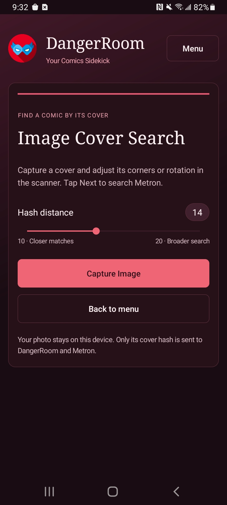
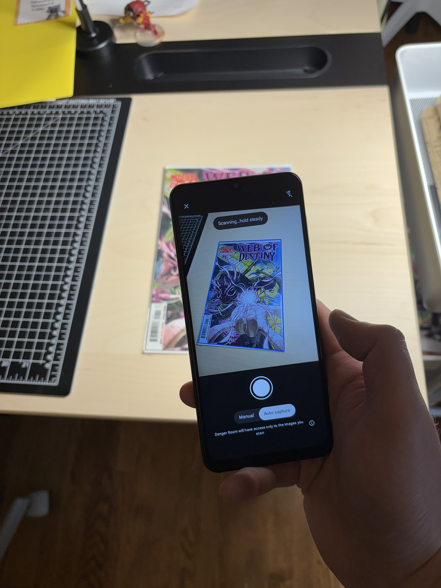
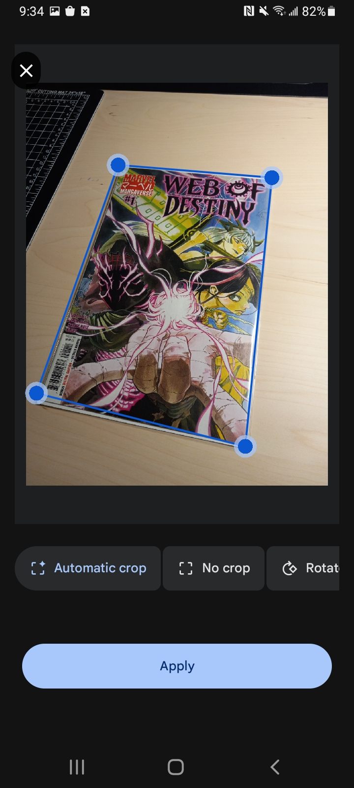
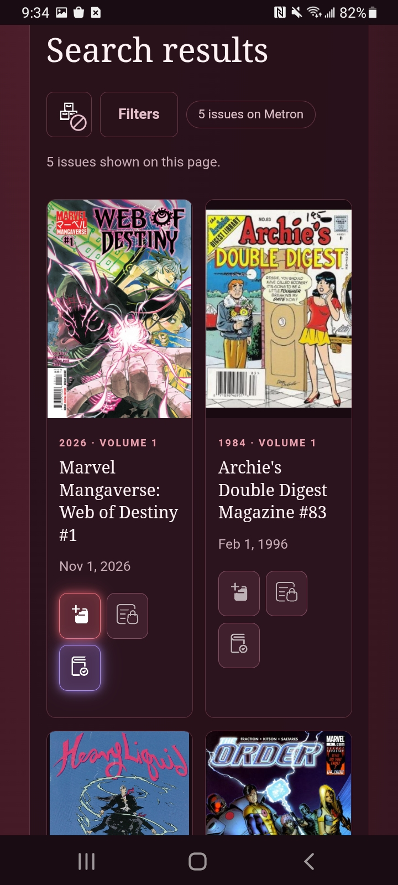

The companion for Danger Room
Hard Light
New in Hard Light 1.2.0
Find it by its cover.
Metron now supports image cover search, and so does Danger Room. Photograph a comic in Hard Light to find matching issues—no title or barcode needed.
-
Set the hash distance
Open Image Cover Search from the menu. Perceptual hash matching measures distance between your sample image and what's in the database. A maximum hash distance of 14 is a good balance between useful matches and variation in photo quality.

-
Capture the cover
Tap Capture Image and take a photo of the comic. Keep the full cover in view, with clear lighting. You can even keep the comic in the bag as long as you minimize glare.

-
Adjust the edges
Rotate the image or move the bounding-box corners to the cover’s edges as needed. Apply your adjustments, then tap Next on Android or Save on iOS to search.

-
Find your match
Browse the matching issues from Metron. Confirm the comic and cover, then use the familiar controls to add it to your collection or Want List.

A closer or broader search. The slider runs from 10 to 20: lower distances give closer matches; higher distances allow more variation and may return more unrelated covers.
Your photo stays on your device. The client creates a perceptual hash of the isolated cover which is sent to your Danger Room instance and Metron for matching.